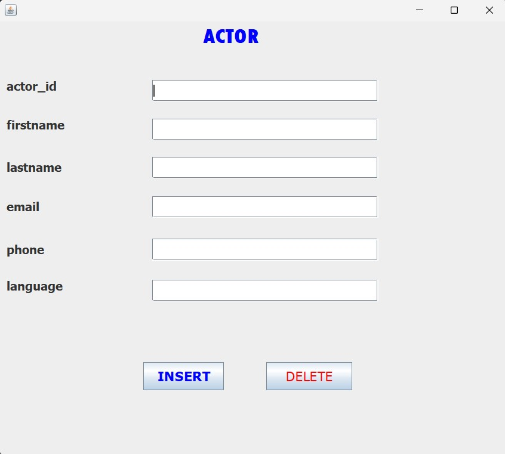
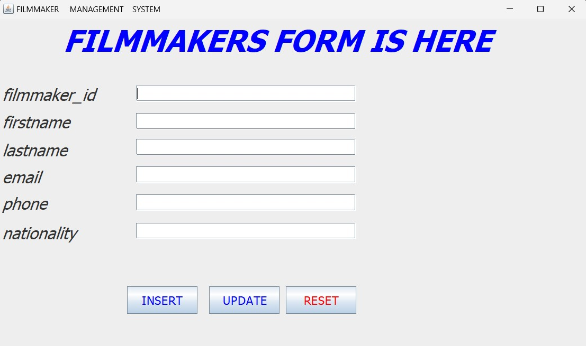
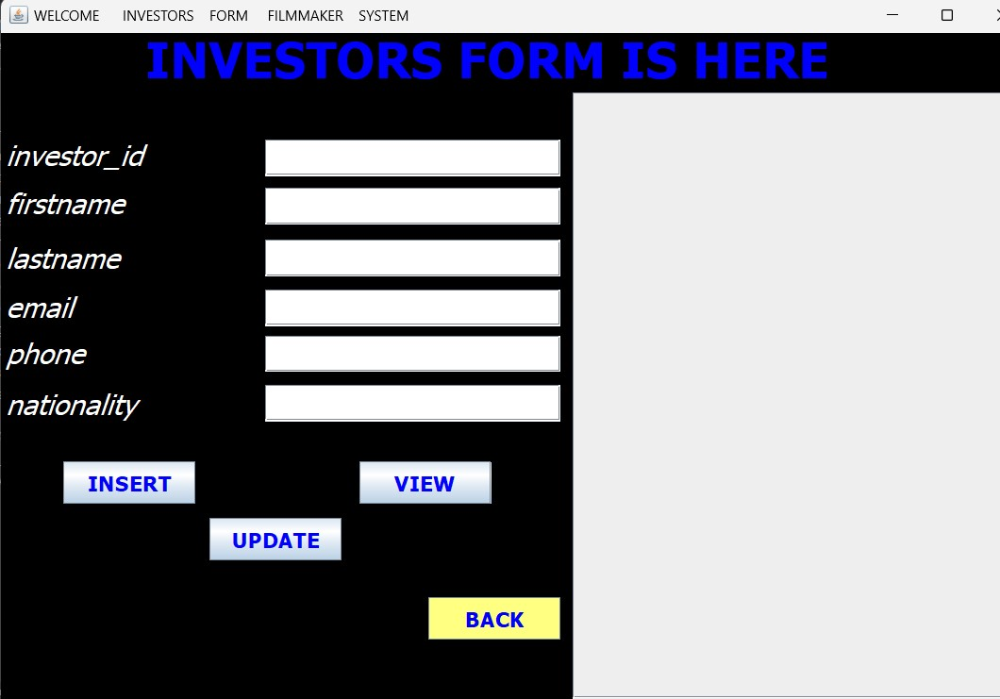
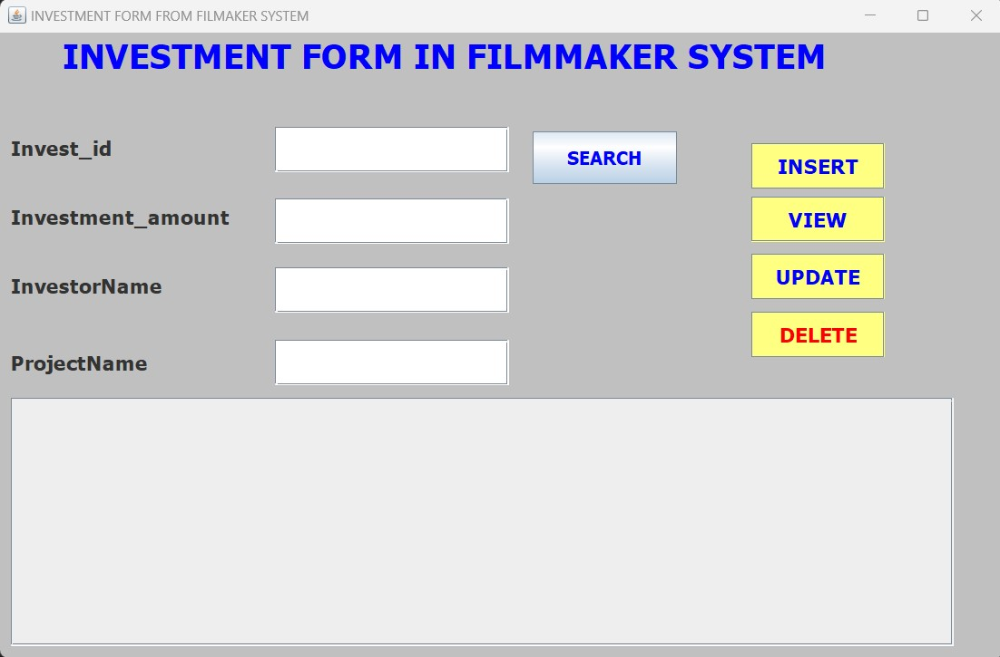
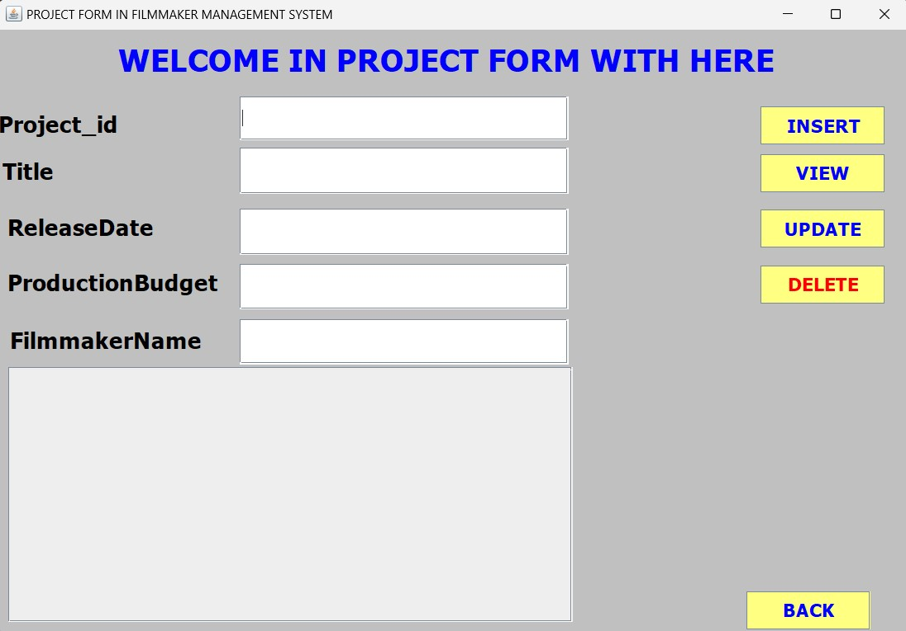
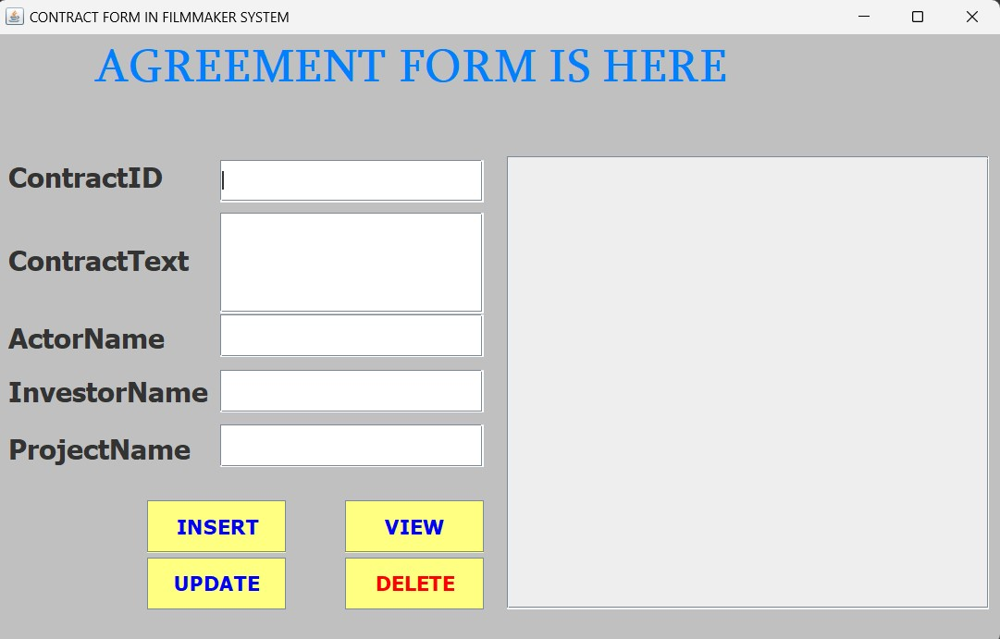

- DATABASE
Database name used: filmmaker_management_system.
- Tables
- actors Table
- Filmmaker table Table
- Contract table Table
- Investors Table
- Investment Table
- Project Table
- Attributes
- Attributes of Actors Table Here are the descriptions or purposes of the attributes/columns used in actor table:
actor_Id: The column which are represents id of actors which is unique value called PRIMARY. It is set to auto-increment (AUTO_INCREMENT). AUTO_INCREMENT means that the database will automatically generate a unique ID for each new record, typically incrementing the previous value of tourist table.
FirstName: The columns which are represents first name and last name of user.
LastName: The column which are represents telephone number of user.
Email: The column which are represents Email of given user.
Telephone: The column which are represents telephone number in tourist table.
Nationality: The column which are represents their citizen or nation in tourist table.
- Attributes of contract Table Here are the descriptions or purposes of the attributes/columns used in contract table:
contract_Id: The column which are represents id of contract which is unique value called PRIMARY. It is set to auto-increment (AUTO_INCREMENT). AUTO_INCREMENT means that the database will automatically generate a unique ID for each new record, typically incrementing the previous value of contract table.
contact Text: The columns which are represents contract text between users.
Actor Name: The column which are represents actor name of user.
Investor Names: The column which are represents investor of given user.
project Name: The column which are represents project Name in contract table.
- Attributes of Actors Table Here are the descriptions or purposes of the attributes/columns used in actor table:
actor_Id: The column which are represents id of actor which is unique value called PRIMARY. It is set to auto-increment (AUTO_INCREMENT). AUTO_INCREMENT means that the database will automatically generate a unique ID for each new record, typically incrementing the previous value of investor table.
FirstName: The column which are represents last LastName in actor table.
LastName: The column which are represents last name in actor table with firmmeker system.
Email: The column which are represents email address in actor table.
Phone_Number: The column which are represents lelephone number in actor table.
language: The columns which are represents languagespoken with actor in actor table.
- Attributes of Project Table Here are the descriptions or purposes of the attributes/columns used in investors table:
investor_Id: The column which are represents id of investor which is unique value called PRIMARY KEY. It is set to auto-increment (AUTO_INCREMENT). AUTO_INCREMENT means that the database will automatically generate a unique ID for each new record, typically incrementing the previous value of investors table.
firstnaname: The column which are represents last LastName in investors table.
LastName: The column which are represents last name in actor table with investor system.
Email: The column which are represents email address in investor table.
Phone_Number: The column which are represents telephone with investor in investor table.
Nationality: The column which are represents nation and states with investor in investor table.
- Attributes of Investment Table Here are the descriptions or purposes of the attributes/columns used in Investment table:
invest_Id: The column which are represents id of Investment which is unique value called PRIMARY KEY. It is set to auto-increment (AUTO_INCREMENT). AUTO_INCREMENT means that the database will automatically generate a unique ID for each new record, typically incrementing the previous value of Investment table.
Investment Amount: The column which are represents investment amount in investment table.
investment Names: The column which are represents investmentname in investment table .
ReleaseDate: The column which are represents date of investing in investment table
ProjectName: The column which are represents projects Names in investment table.
- Attributes of Project Table Here are the descriptions or purposes of the attributes/columns used in project table:
project_Id: The column which are represents id of project which is unique value called PRIMARY KEY. It is set to auto-increment (AUTO_INCREMENT). AUTO_INCREMENT means that the database will automatically generate a unique ID for each new record, typically incrementing the previous value of project table.
Title: The column which are represents title of project in filmmaker management
release date: The column which are represents the ReleaseDate of the project table.
Project budget: The column which are represents project budget of each project.
filmmaker names: The column which are represents names of filmmaker.
- JAVA PROGRAMMING
- Description
Eclipse IDE: an integrated development environment used in computer programming. It contains a base workspace and an extensible plug-in system for customizing the environment. It is the second-most-popular IDE for Java development, and was the most popular.
JAR stands for Java Archive: It's a file format based on the popular ZIP file format and is used for aggregating many files into one. Although JAR can be used as a general archiving tool, the primary motivation for its development was so that Java applets and their requisite components.
- Forms and Images
Actor Form
filmmaker Form
Investor Form
Investment Form

project Form

contract Form

The filmmaker management system is a software platform designed to streamline and organize various aspects of filmmaking projects, including scheduling, budgeting, crew management, and communication.
The Filmmaker table in a filmmaker management system contains information about creators.
The Contract table in a filmmaker management system contains information about contract between them.
The Investors table in a filmmaker management system contains information about information with investors.
To represent Investment information in a database contains information about Investment between them.
Project ID (Primary Key): This attribute serves as a unique identifier for each Project in the system.
IntroductionIn this chapter I will be describing how powerful generalpurpose programming language was used to create the analyzed system. Under this chapter I will undergo full detail of how everything will function together with database that have been describe above and how it cope with full analyzed system.
Tools used to develop this system in java programming

MySQL Connectors: MySQL provides standards-based drivers for JDBC, ODBC, and .Net enabling developers to build database applications in their language.